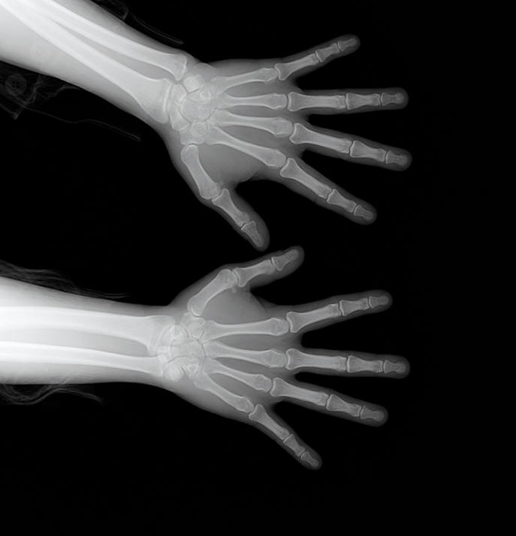
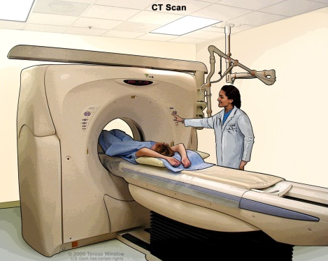
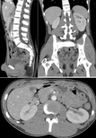
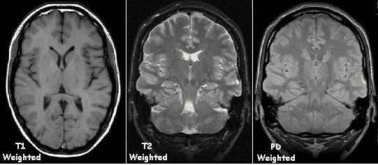
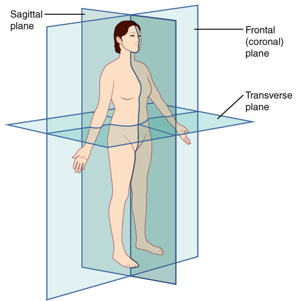
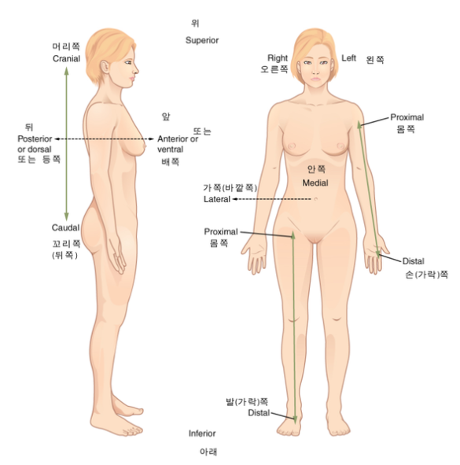
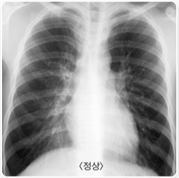
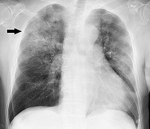
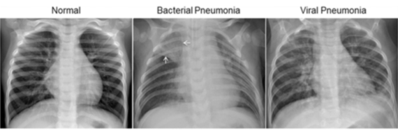

해당 포스팅은, 아이펠 Exploration 9번 노드를 학습하고 작성한 기록물 입니다.
의료영상에 딥러닝을 접목시켜 분석하는 실습을 해보았으며, 사용한 데이터는 캐글의 폐렴환자 데이터입니다.
Chest X-Ray Images (Pneumonia)
https://www.kaggle.com/paultimothymooney/chest-xray-pneumonia
의료 이미지는 개인정보문제가 있어 데이터를 구하는 것 자체가 쉽지 않음
라벨링 작업 자체가 의학적 전문 지식을 요하므로 데이터 셋 구축 비용이 비쌈
희귀질병의 경우, 데이터 입수 자체가 어려움
음성/양성 데이터간 imbalance가 심함 -> 학습에 주의 필요
이미지만으로 진단은 어려움 -> 다른 데이터와 결합하여 학습해야 하는 경우 有
즉, 딥러닝 영상처리 기술 + 의학적 도메인 지식 + 의료 영상에 대한 명확한 이해 필요
전자를 물체에 충돌시킬 때 발생하는 투과력이 강한 복사선(전자기파)
방사선의 일종
방, 근육, 천, 종이같이 밀도가 낮은 것은 수월하게 통과하지만, 밀도가 높은 뼈, 금속 같은 물질은 잘 통과하지 못합니다.

사진 출처 : http://health.cdc.go.kr/healthinfo/index.jsp
Computed Tomography
환자를 중심으로 X-RAY를 빠르게 회전하여 3D 이미지를 만들어내는 영상
3 차원 이미지를 형성하여 기본 구조와 종양 또는 이상을 쉽게 식별하고 위치를 파악가능
신체의 단면 이미지는 slice라고 함
Slice는 단층 촬영 이미지라고도 함
기존의 X-RAY보다 더 자세한 정보를 포함

http://www.nibib.nih.gov/science-education/science-topics/computed-tomography-ct

http://en.wikipedia.org/wiki/CT_scan
Magnetic Resonance Imaging(자기 공명 영상)
신체의 해부학적 과정과 생리적 과정을 보기 위해 사용
강한 자기장를 사용 -> 신체 기관의 이미지 생성
방사선을 사용X -> CT나 X-ray보다는 안전


https://ko.wikipedia.org/wiki/%ED%95%B4%EB%B6%80%ED%95%99_%EC%9A%A9%EC%96%B4

https://ko.wikipedia.org/wiki/%ED%95%B4%EB%B6%80%ED%95%99_%EC%9A%A9%EC%96%B4
영상을 볼 때는 보통 정면을 보고 있는 것으로 가정을 하며 위의 이미지에서 오른쪽에 해당합니다.
또한 영상을 볼 때는, 환자중심으로 보기 때문에 오른쪽 얼굴 이라고하면 제가 환자를 마주보는 상황에서 왼쪽 얼굴을 보아야 합니다.

http://health.cdc.go.kr/health/Resource/Module/Content/Printok.do?idx=2110&subIdx=4
Chest X-Ray Images (Pneumonia)
https://www.kaggle.com/paultimothymooney/chest-xray-pneumonia
(에디터 주) 캐글에서 다운로드한 데이터는 chest_xray 하위에 chest_xray 폴더가 중복으로 포함되어 있어서 전체 데이터의 크기가 2.5GB인 경우가 있습니다. 중복된 데이터는 필요하지 않습니다.
해당 이미지는 중국 광저우에 있는 광저우 여성 및 어린이 병원의 1~5 세 소아 환자의 흉부 X선 영상입니다.
폐렴(pneumonia 뉴모니아)은 폐에 염증이 생긴 상태로 중증의 호흡기 감염병이다. 세균을 통한 감염이 가장 많으며, 바이러스, 균류, 또는 기타 미생물도 원인이 될 수가 있다. 드물게는 알레르기 반응이나 자극적인 화학 물질을 흡입해 발생하기도 한다. 노인이나 어린아이, 혹은 전체적으로 상태가 안 좋은 환자들이나 기침 반사가 약한 사람들에게는 흡인성 폐렴이 발생한다. 그리고 세균이 원인인 경우는 항생제로 치료를 할 수 있다. 항생제가 생기기 전에는 50~90%가 사망할 정도로 위험한 질환이었으나, 현재는 거의 사망하지 않는다. 1940년대에 항생제가 개발되기 전까지는 폐렴 환자의 1/3 정도가 사망하였다. 오늘날에는 적절한 의학적 치료로 폐렴 환자의 95% 이상이 회복된다. 그러나 일부 저개발국(개발 도상국)에서는 폐렴이 여전히 주요 사망 원인 중 하나이다.
출처 : https://ko.wikipedia.org/wiki/폐렴
염증은 유해한 자극에 대한 생체반응 중 하나로 면역세포, 혈관, 염증 매개체들이 관여하는 보호반응이다. 염증의 목적은 세포의 손상을 초기 단계에서 억제하고, 상처 부분의 파괴된 조직 및 괴사된 세포를 제거하며, 동시에 조직을 재생하는 것이다.
출처 : https://ko.wikipedia.org/wiki/염증
정리하자면, 폐렴은 폐에 염증이 생기는 것이며, 염증은 백혈구들이 세균 등에 맞서 싸우고 있는 장소입니다.

폐렴의 경우, X-ray 사진에서 다양한 양상의 음영이 보입니다. 깨끗해야 할 폐 부위에 희미한 그림자가 관찰되는 것입니다. 하지만, 실제 영상을 보면, 희미한 케이스가 많으므로 그 희미함이 폐렴에 의한 것인지, 다른 이유인지는 파악하기 어렵습니다.

왼쪽은 정상, 중간은 세균성 폐렴, 오른쪽은 바이러스 폐렴입니다.
세균성 폐렴은 일반적으로 왼쪽 상부 엽(하얀 화살표)에 하얀 부분이 관찰되며, 바이러스성 폐렴은 확산된 “interstitial(조직 사이에 있는)” 패턴으로 나타납니다.
실습 코드는 아래 URL에서 확인하실 수 있으며, 포스팅에는 제가 정확도를 향상시키기 위하여 사용한 아이디어 혹은 새로 배운점 위주로 작성하였습니다.
해당 코드글에서 보실 수 있겠지만, 캐글 폐렴 환자 데이터에서
CNN 모델의 경우, 데이터가 클래스 별 balance가 좋을 수록 train을 잘 합니다. 그렇기 때문에 imbalance 문제를 꼭 해결해 주어야합니다.
test 데이터는 평가 하기 위해서 사용하기 때문에 학습과 관련이 없어서 inbalance한 데이터 셋이어도 상관없습니다.
validation 데이터는 평가 하기 위해서 사용하기 때문에 학습과 관련이 없어서 inbalance한 데이터 셋이어도 상관없습니다.
Weight balancing 은 training set의 각 데이터에서 loss를 계산할 때 특정 클래스의 데이터에 더 큰 loss 값을 갖도록 가중치를 부여하는 방법입니다. Keras는 model.fit()을 호출할 때 파라미터로 넘기는 class_weight 에 이러한 클래스별 가중치를 세팅할 수 있도록 지원하고 있습니다.
참고 링크
딥러닝에서 클래스 불균형을 다루는 방법 : https://3months.tistory.com/414
train_filenames = tf.io.gfile.glob(TRAIN_PATH)
print(f'Normal image path\n{filenames[0]}')
print(f'Pneumonia image path\n{filenames[2000]}')
train_list_ds = tf.data.Dataset.from_tensor_slices(train_filenames)
val_list_ds = tf.data.Dataset.from_tensor_slices(val_filenames)
# Train 데이터셋, validation 데이터셋 개수 확인을 해보겠습니다.
TRAIN_IMG_COUNT = tf.data.experimental.cardinality(train_list_ds).numpy()
print(f"Training images count: {TRAIN_IMG_COUNT}")
VAL_IMG_COUNT = tf.data.experimental.cardinality(val_list_ds).numpy()
print(f"Validating images count: {VAL_IMG_COUNT}")
train_ds = train_list_ds.map(process_path, num_parallel_calls=AUTOTUNE)
val_ds = val_list_ds.map(process_path, num_parallel_calls=AUTOTUNE)
def prepare_for_training(ds, shuffle_buffer_size=1000):
ds = ds.shuffle(buffer_size=shuffle_buffer_size)
ds = ds.repeat()
ds = ds.batch(BATCH_SIZE)
ds = ds.prefetch(buffer_size=AUTOTUNE)
return ds
train_ds = prepare_for_training(train_ds)
val_ds = prepare_for_training(val_ds)
def conv_block(filters):
block = tf.keras.Sequential([
tf.keras.layers.SeparableConv2D(filters, 3, activation='relu', padding='same'),
tf.keras.layers.SeparableConv2D(filters, 3, activation='relu', padding='same'),
tf.keras.layers.BatchNormalization(),
tf.keras.layers.MaxPool2D()
])
return block
def augment(image,label):
image = tf.image.random_flip_left_right(image) # 랜덤하게 좌우를 반전합니다.
return image,label
def prepare_for_training(ds, shuffle_buffer_size=1000):
# augment 적용 부분이 배치처리 함수에 추가되었습니다.
ds = ds.map(
augment, # augment 함수 적용
num_parallel_calls=2
)
ds = ds.shuffle(buffer_size=shuffle_buffer_size)
ds = ds.repeat()
ds = ds.batch(BATCH_SIZE)
ds = ds.prefetch(buffer_size=AUTOTUNE)
return ds
저 9-7에서 augment 함수 궁금한게.. 저 함수만 입력해도 훈련데이터가 늘어나는 건가요? 아니면 따로 데이터 합치는 코드를 써야하나요?
이래저래 시도했을 때 제가 지금까지 내린 결론은 1) 데이터 양은 계속 동일한데, 2) random하게 flip해주는 걸 추가하고, 3) 덧붙여 repeat()이란 걸 붙여놓으면, 4) 데이터 개수가 무한개로 많아지는데 그 중에 flipped된 종류가 생긴다 인 것 같아요
음… ㅋㅋ 일단 좌우로 flip하는 게 성능 향상에 도움을 준다는 의견이 있긴 해서 한번 따라보겠습니다…ㅋㅋ https://www.kaggle.com/c/rsna-pneumonia-detection-challenge/discussion/66130
참고 논문 1.
Understanding the Disharmony between Dropout and Batch Normalization by Variance Shift
참고 논문 2.
Rethinking the Usage of Batch Normalization and Dropout in the Training of Deep
AIFFEL LMS
문제시 연락 부탁드립니다. :)